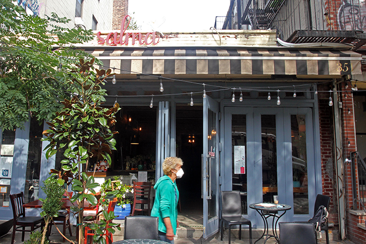

<!doctype html>
<html>
    <head>
        <meta charset="UTF-8">
        <meta name="viewport" content="width=device-width, initial-scale=1">
        <link rel="stylesheet" href="articlesheet.css">
        <link rel="icon" type="image/x-icon" href="img/rice.png">
        <title></title>
        <style>
            @import url('https://fonts.googleapis.com/css2?family=Assistant&family=Cardo:ital@1&family=Frank+Ruhl+Libre&family=Lora:ital,wght@1,600&display=swap');
        </style>
    </head>
</html>
<body>
    <div class='text-container'>
        <h1>Small restaurants in NYC sacrifice to cope with price inflation and supply shortage</h1>
        <p class="byline">Reporting & Photo: Chuqin Jiang</p>
        <p class="byline">Date: 11/3/2021</p>
        <p>Though it only opened in September, Salma, a Lebanese Grill in the East Village, has already had to hike its prices. Initially, main dishes cost $15. But now, customers have to pay at least $17.</p>
        <p>“It’s only $2 for customers. But the average price of our supply increases 30%-50%. Everything jumps up.” said Pierre Doumit, the owner of the restaurant.</p>
        <p>A year and half ago, Doumit run another restaurant and could buy a pound of filet mignon for between $9 and $12. The price has increased to $16 to $18 now. He had to replace the beef with veal to reduce the cost.</p>
        <div class="picture">
            
        </div>
        <p class="caption">The menu posted at the entrance of Salma has been changed since end of September, with price rising $2 to $3 for each dish.</p>
        <p>Salma is not the only small restaurant facing such problems. Recent supply chain issues have forced other owners to increase or consider raising their prices. Some imported ingredients are hard to find. To cope with that situation, many restaurants are being forced to change their recipes or cut the size of their portions. Still, their profits continue to shrink.</p>
        <p>Half of small business owners reported in November that supply chain disruptions were affecting their business, up from 32% four months ago, according to a most recent survey by <a href="https://assets.nfib.com/nfibcom/Covid-19-20-Survey-FINAL.pdf">National Federation of Independent Business</a>, a trade association. Almost all, 90%, anticipated the problem will impact their business for at least the next five months or more.</p>
        <p>“Small businesses may need to start thinking of diversifying their input sources and preemptively reduce their vulnerability to price hikes and reduced supply,” said Jorge González Hermoso, a research analyst at the Urban Institute. </p>
        <p>Cheli, a Chinese restaurant located in 19 St. Marks Place, has already had to seek out ingredients from a range of suppliers in the last few months.</p>
        <p>The restaurant specializes in Shanghainese cuisine and the surrounding Jiangnan region in China. One of its popular signature drinks is rice wine milk tea. The rice wine needs to be imported from Chinese wineries and distributed by dealers in U.S. The manager of Cheli, Sean Tsu, called four to five dealers the restaurant worked with before but was told there wasn’t a single bottle in stock. He had to contact other suppliers and bought every bottle left, even in cases where there were several bottles missing. If there is no replenishment, Tsu estimated that his inventory is only enough to keep this drink on the menu for a month. </p>
        <p>“The chefs have less choices now, which forces them to change recipes in order to create the taste as original as possible,” said Tsu, who was resigned about having to deal with higher prices and delayed supply time. </p>
        <p>“We’re just throwing money to keep the quality because we want to maintain our brand image,” he continued. “We haven’t put the cost to customers. But if the price keeps increasing, I have to make that difficult decision. It’s a vicious circle.”</p>
        <div class="picture">
            
        </div>
        <p class="caption">Tsu, the manager of Cheli, is worried about the price inflation and ingredient shortage.</p>
        <p>Kahlo, a Mexican restaurant and bar in Hudson Yards, also needs to pay more for certain types of liquor. There is a shortage of some popular brands, like Hennessy, a French brand famous for cognac.</p>
        <p>Francisco Garcia, the manager of Kahlo, said that the eatery didn’t want to disappoint its customers. If certain brand of liquor has been out of stock at one provider, Kahlo manages to get it from other places even if it has to pay the retail price, which is higher than the wholesale one.</p>
        <p>Every time a provider calls and says it has a popular brand of liquor, Garcia will put in a larger order than before and keep it in storage.</p>
        <p>“Because we know probably there isn’t going to be any more next week,” he said. </p>
        <p>It is still too early to tell what the impact of supply chain issue would be and whether it may affect small businesses and large chains differently, experts said. </p>
        <p>“Many small restaurants work directly with suppliers and their community, and they are not as greatly impacted by things like transportation, that a chain [store] is facing. But small independent restaurants also have less buying power,” said Erika Polmer, the executive director of the Independent Restaurant Coalition, a national trade group formed during COVID-19.</p>
        <p>The organization had urged Congress to pass the Restaurant Revitalization Fund to help independent restaurants and bars survive the pandemic. Lawmakers approved the fund in March as a part of the American Rescue Plan Act, appropriating $28.6 billion for the Small Business Administration to award. </p>
        <p>“That fund provides grants to restaurants, and it's a revenue replacement so it would make up the money that they lost in 2020. With that money, they would be able to purchase goods from the supply chain with more confidence and less stress,” Polmer said. </p>
        <p>But the fund could not meet the high demand from restaurants. As of June 30, just over 101,000 restaurants were approved, while 278,304 submitted applications, seeking more than $72.2 billion in funding, according to the <a href="https://www.sba.gov/sites/default/files/2021-07/RRF_Report-508.pdf">US Small Business Administration</a>. The SBA closed new applications in May and disabled the portal in July.</p>
        <p>Salma is barely making a profit now. The tight budget pushes Doumit to cut expenses as much as possible. For instance, he couldn’t afford to ask suppliers to deliver food to him, which costs an extra $50. At least twice a week, he drives more than one hour to two main suppliers in Queens and Brooklyn and brings back fresh ingredients and traditional seasoning from Lebanon. On the other days, he moves all the tables and chairs out himself for cleaning at 9 am. The staff comes at 10 am to help sweep the floor and clean the tableware.</p>
        <div class="picture">
            
        </div>
        <p class="caption">Doumit doesn’t want to lose any of his workers.</p>
        <p>Doumit is now afraid to lose any of his three workers because he can’t afford to pay higher wages to find replacements. He didn’t apply for any local or federal grant programs because he believed they would only provide short-term benefits.</p>
        <p>“I cannot complain about my trouble to my customers,” he said. “They are here for fun. I need to keep the positivity all the time and throw my energy everywhere.”</p>
    </div>
</body>